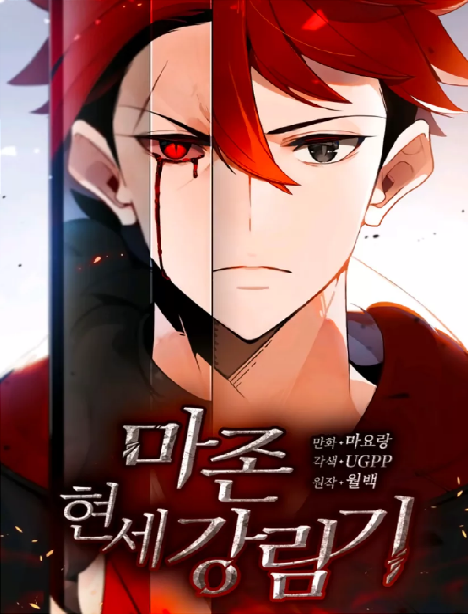
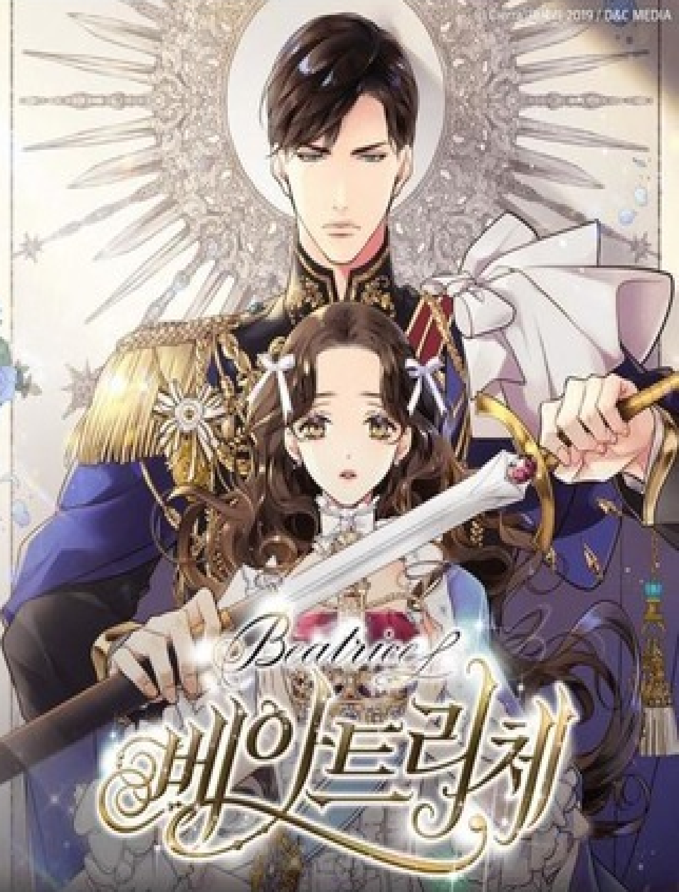

Главная
Новое
Категории
.
.
.
.
.
.
БлэкСад
Серия комиксов о частном детективе Джоне Блэксаде, чёрно-белом коте.
БлэкСад
Читатель
Человек с книжной зависимостью — Су Хёк. Он настолько любит читать, что ищет любые способы насладится книгами.
Читатель

Нисхождение демонического мастера
Первая жизнь. После трагического несчастного случая, потеряв свою семью и ноги, он заканчивает свою собственную жизнь. Вторая жизнь. Он заслужил славу Красного Демонического Мастера в Чжунъюане, но его предал человек, которому он доверял больше всего. И вот наступает его третья жизнь.
Нисхождение мастера
Башня Бога
Башня — место, в котором испытывается воля и где исполняются самые невероятные желания. Если Башня избрала тебя, то всё, что надо сделать: покорить её, и тогда всё: богатство, власть, сила — что бы ты ни пожелал станет твоим. Однако покорение может занять годы, если не века. А ты готов покорить Башню?
Башня Бога
Тёмный дворецкий
Альтернативная Англия конца XIX-го века, роскошное поместье графа Фантомхайв, дружная компания нерасторопных слуг, над которыми возвышается во всех смыслах этого слова безупречный Себастьян.
Тёмный дворецкий

Беатрис
Когда королевство Эльпаса пало перед клинком величайшего героя империи, чтобы выжить, принцесса Беатриче приняла облик рабыни Хлои. Но потом она поймала взгляд того самого героя…
Беатрис
Сын света
Ленивый подросток из-за своего характера выбрал изучать никому не интересную магию стихии света, и сам того не ведая, сел на пароход, плывущий по реке Судьбы, постепенно становясь легендарным учёным-магом. Так он и стал уважаемым во всем мире Сыном Света.
Сын света
Сага о Винланде
Эта история случилась в начале XI века, когда викинги, безраздельно господствовавшие в северных морях, грабили побережья Франции и Англии. В эпоху, где оружие значило больше, нежели слова, маленький мальчик невольно оказывается косвенной причиной гибели своего отца.
Сага о Винланде
Мой удивительный ВиЧат
Обычного студента по имени Линь Хай случайно пригласили в сообщество в ВиЧате, полное странных и мистических персонажей, таких как Повелитель Бури, Мать Молний, Могущественный Бог Чудес и прочих… После этого ему стали приходить странные подарки, которые полностью изменили его жизнь.
Удивительный ВиЧат
Исход
В мире, где только женщины рождаются со способностью к магии, родился мальчик Амель с такой способностью. В этом мире он должен держать все в тайне, чтобы не оказаться вне закона.
Исход
Сердца Пандоры |
Мир, похожий на наше Высокое Средневековье, тесно связан с Бездной — измерением, где не действуют привычные законы природы. Тот, кто владеет Дверью в Бездну и может заключить договор с «цепью» — тамошним обитателем — получает огромную власть. Именно такие люди составляют аристократическую элиту, но при этом не афишируют источник силы и могущества.
Сердца Пандоры |
Невоспитанные коты
После десятилетнего пребывания за рубежом Ниномия Митиру переезжает в Японию, чтобы жить вместе со своим старшим братом, Сио. Однако за прошедшие годы многое изменилось, так что Митиру ожидает несколько сюрпризов... Не пожалеет ли он о возвращении на родину?
Невоспитанные коты
Изгой
Кайла Барнса всю его сознательную жизнь мучали одержимые демонами и он хочет докопаться до правды. К сожалению его поиски могут привести его к уничтожению всего живого на земле.
Изгой
Впереди - вечность
Ариса без памяти влюбилась в своего одноклассника Накай ещё со школьного фестиваля, но никогда не говорила с ним. Заговорит ли она с ним до того времени, когда их пути разойдутся на выпускном?
Впереди - вечность
Бакудан! - Парень эпохи Бакумацу
Первый иероглиф в имени Макото – 真 – означает искренность, реальность, подлинность... О, как же посмеялся мир над нашим главным героем, который был не особо счастливым обладателем шибко искреннего имени. Ещё недавно над ним издевались его семпаи; ещё недавно он радостно врал и этим защищал свою шкуру; ещё недавно он только мечтал стать известным...
Бакудан!
Память
Однажды в горах, Волк Хибари увидел маленького Кролика Тсунаеши, который сам пришел в волчье логово.
Память
Не такой плохой конец
Парни ухлёстывают за популярной девушкой по имени Нао (с большой грудью), однако она всегда смотрела только на своего друга детства - Акио. Лишь от его действий зависит, станет ли это историей с счастливым концом или прологом к новой.
Не такой плохой конец
Гибель Японии
Онодера Тосио. Его маленький мир, родной город, страна, всё безвозвратно меняется в ходе великой катастрофы. Что он предпримет? Что будет чувствовать? Всё это ожидает вас в апокалиптическом мире манги "Гибель Японии", в основу которой лег поистине бессмертный роман японского писателя Сакё Комацу.
Гибель Японии
Ре-Кан!
История повествует о девушке по имени Амами Хибики, которая может видеть сверхъестественное и общаться с животными.
Ре-Кан!
Твоя избалованная жена
Начинающая онлайн-писательница привлекла внимание генерального директора сайта веб-романов. Он помог ей подняться по карьерной лестнице и она стала самой известной веб-писательницей. Череда случайностей и вот брачный договор уже подписан… Просьба: Не трогайте описание!
Твоя избалованная жена
Moti
Manga
MotiManga © 2020. Design by
Progvait
f